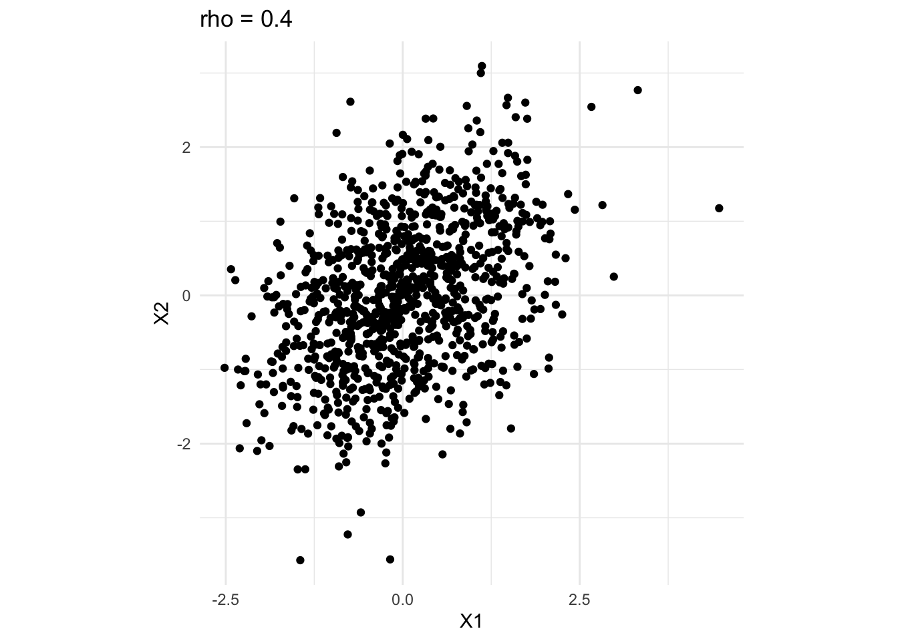
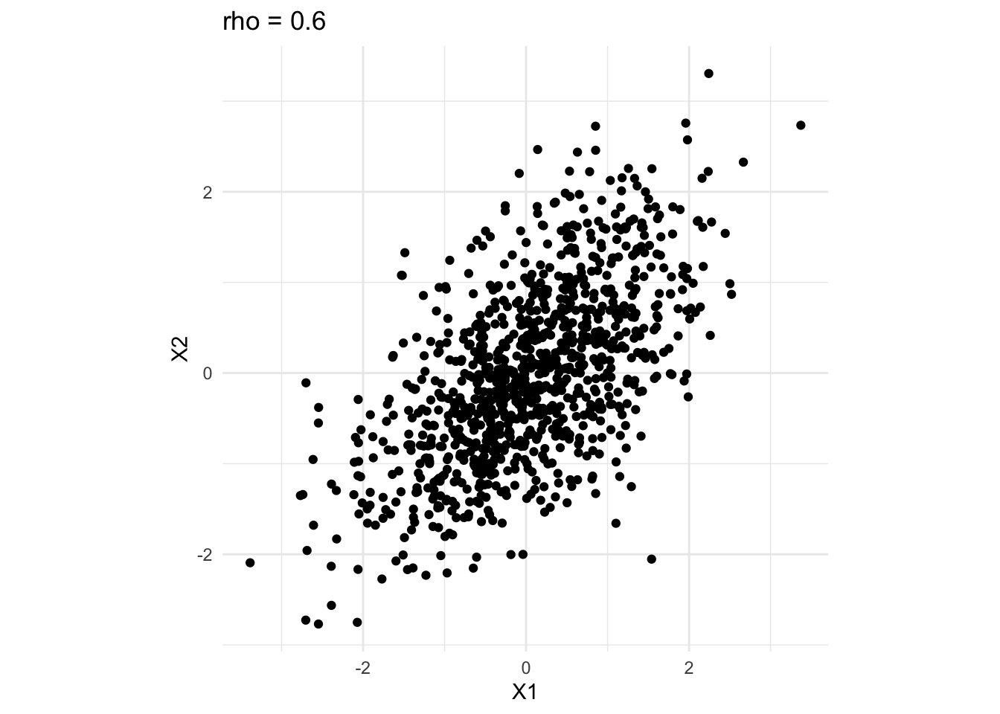
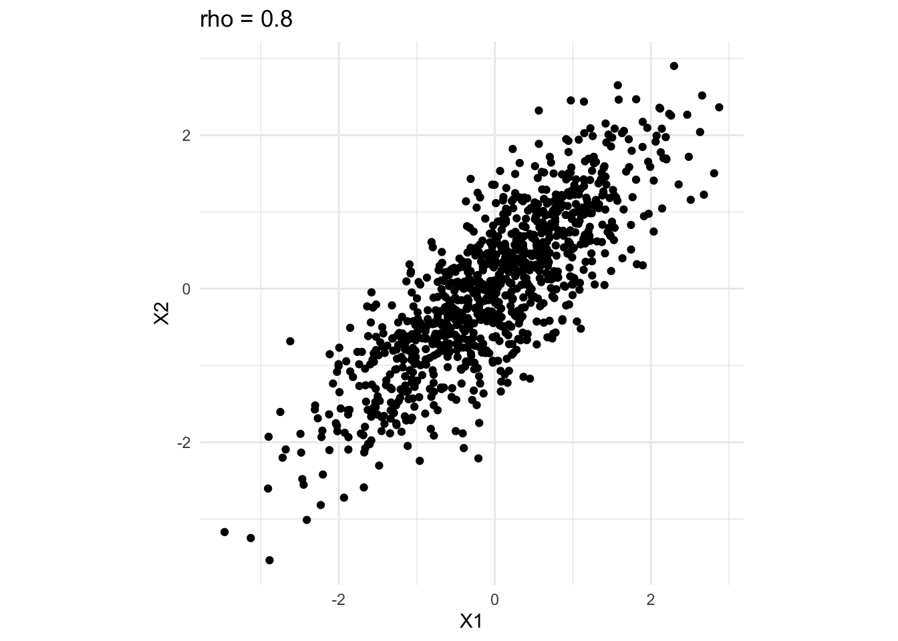
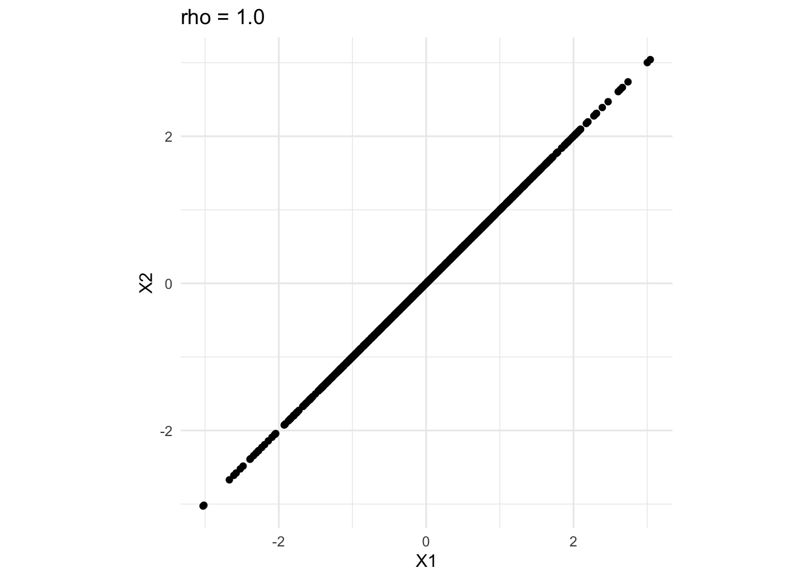
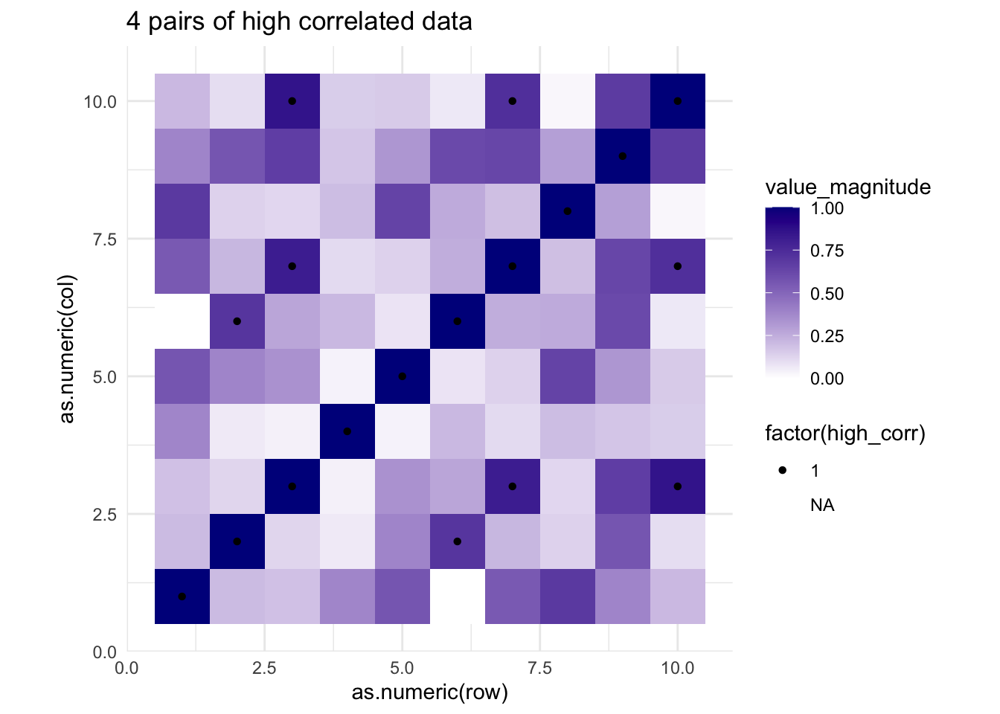
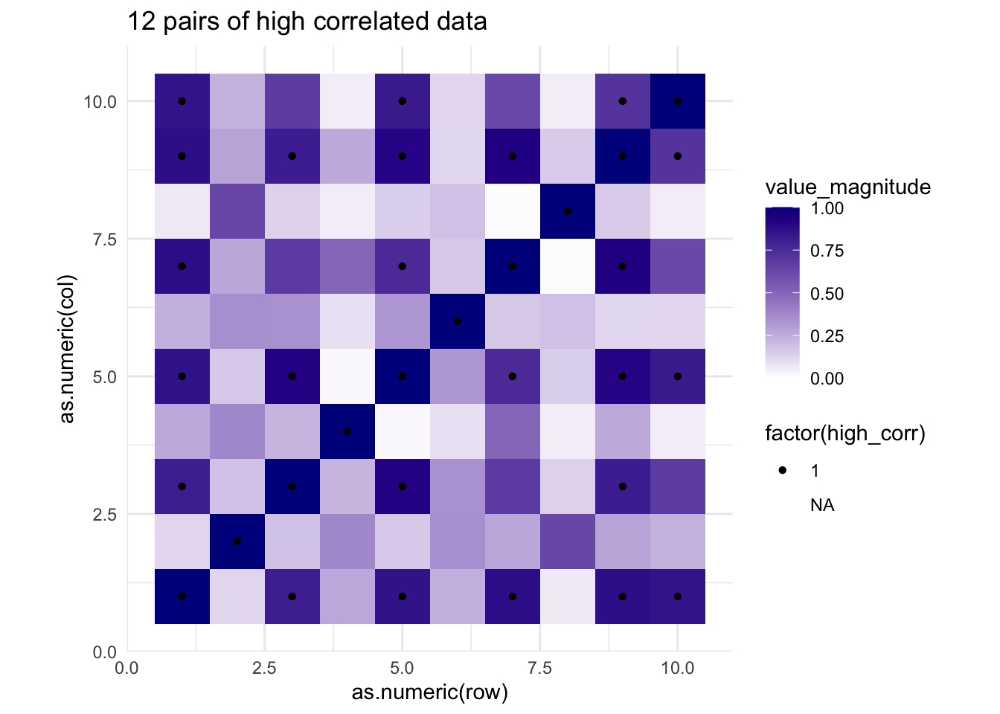
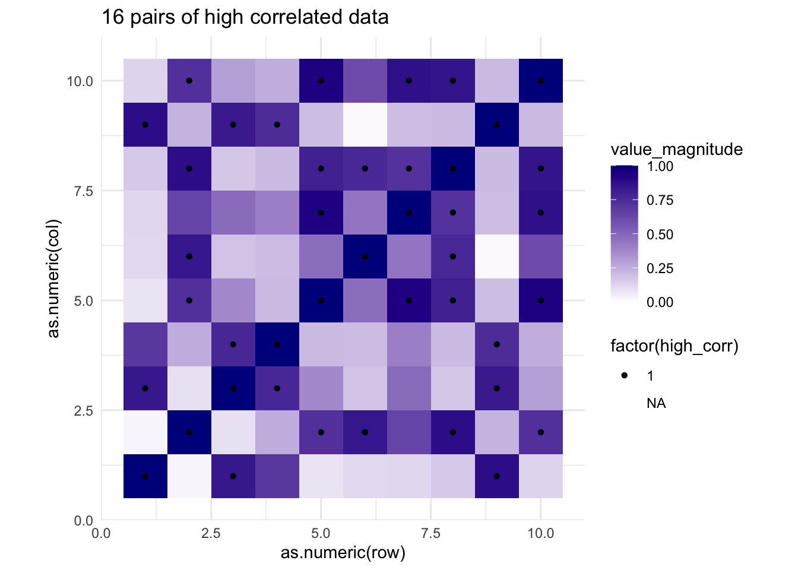
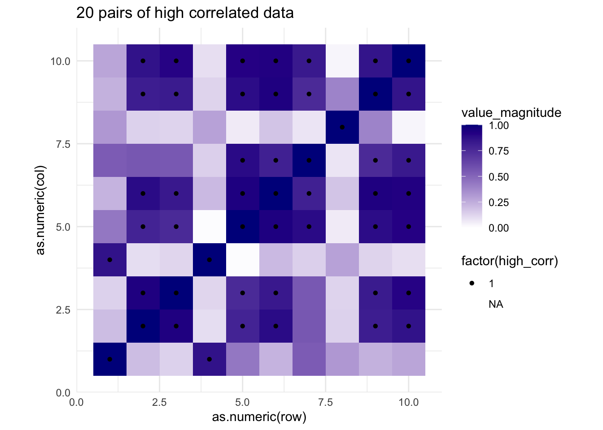

Research Wishart distribution and properties of positive definite matrices
Function to check / fix simulated data (ideas below)
Simulate data set, check criteria of matching ratios and spacings between pairs
If value pair is “close enough” to ratio, fix so that it perfectly matches (e.g., if within 2% of ratio, adjust larger value so that it fits)
Simulate multiple data sets that match criteria for context, choose data set that has largest average values (this will prevent getting data sets where a ratio of 0.8 could be recorded from values of 8 and 10 if the scale of the z-axis goes from 0 to 100)
Potential issue: in correlated data, it might not be feasible to use all 10 ratios for some pairings (e.g., 4 highly correlated pairs with rest as low correlation could have middle ratios (0.4, 0.5, 0.6) not appear); possibly need to relax 2/3 restriction
library(tidyverse)
── Attaching core tidyverse packages ──────────────────────── tidyverse 2.0.0 ──
✔ dplyr 1.1.4 ✔ readr 2.1.5
✔ forcats 1.0.0 ✔ stringr 1.5.1
✔ ggplot2 3.5.1 ✔ tibble 3.2.1
✔ lubridate 1.9.3 ✔ tidyr 1.3.1
✔ purrr 1.0.2
── Conflicts ────────────────────────────────────────── tidyverse_conflicts() ──
✖ dplyr::filter() masks stats::filter()
✖ dplyr::lag() masks stats::lag()
ℹ Use the conflicted package (<http://conflicted.r-lib.org/>) to force all conflicts to become errors
set.seed(201948)
In this document, I will propose an experimental design for comparing 2d and 3d heat maps.
Treatments
Media (2d digital, 3d interactive with color, 3d interactive without color, 3d printed)
Context (unrestricted, correlation matrix)
Unrestricted: no inherent structure in grid other than generating function
Correlation matrix: matrix of variables with high/low correlations
Ratios (0.1, 0.2, …, 1.0)
Variation (5)
Note: this is where additional structure are introduced, specific to the context (this is intended as replication of data sets and will have similar comparisons across within-context variations. )
Questions to ask participants
Which value of the marked pair is smaller?
Assume that the larger value of the marked pair is 100 units. Use the slider to estimate the magnitude of the smaller value of the marked pair.
Using the value that you specified as smaller, identify a location on the grid that is similar in value/magnitude.
Context
Unrestricted
Here, I propose the following structures:
- Semi-spherical around center
- Saddle point
- Gradient increase across x only
- Gradient increase across x and y
- Completely at random
# Scaling functionscale0to100 <-function(x){100*(x-min(x))/(max(x)-min(x))}x =1:10y =1:10empty_grid <-expand_grid(x,y)set.seed(2104)# Variation 1: Spherical around centerdata_unrestricted_var1 <- empty_grid %>%mutate(z =7^2- (x-5)^2- (y-5)^2+rnorm(100, 0, sd =3),z =scale0to100(z))ggplot(data_unrestricted_var1, aes(x = x, y = y, fill = z)) +geom_tile() +scale_fill_gradient(low ='white', high ='darkblue', limits =c(0, 100))
# Variation 2: Saddle Pointdata_unrestricted_var2 <- empty_grid %>%mutate(z =scale0to100((x-5)^2- (y-5)^2+rnorm(100, 0, 3)))ggplot(data_unrestricted_var2, aes(x = x, y = y, fill = z)) +geom_tile() +scale_fill_gradient(low ='white', high ='darkblue', limits =c(0, 100))
# Variation 3: Gradient across x onlydata_unrestricted_var3 <- empty_grid %>%mutate(z =scale0to100(2*x +rnorm(100, 0, 3)))ggplot(data_unrestricted_var3, aes(x = x, y = y, fill = z)) +geom_tile() +scale_fill_gradient(low ='white', high ='darkblue', limits =c(0, 100))
# Variation 4: Gradient across x and ydata_unrestricted_var4 <- empty_grid %>%mutate(z =scale0to100(2*x + y +rnorm(100, 0, 3)))ggplot(data_unrestricted_var4, aes(x = x, y = y, fill = z)) +geom_tile() +scale_fill_gradient(low ='white', high ='darkblue', limits =c(0, 100))
# Variation 5: No structuredata_unrestricted_var5 <- empty_grid %>%mutate(z =scale0to100(rnorm(100, 0, 3)))ggplot(data_unrestricted_var5, aes(x = x, y = y, fill = z)) +geom_tile() +scale_fill_gradient(low ='white', high ='darkblue', limits =c(0, 100))
Correlation Matrix
library(MASS)
Attaching package: 'MASS'
The following object is masked from 'package:dplyr':
select
ggplot2::theme_set(theme_minimal() +theme(aspect.ratio =1))corr0.0=data.frame(mvrnorm(n =1000, mu =c(0,0), Sigma =matrix(c(1,0,0,1), nrow =2))) corr0.2=data.frame(mvrnorm(n =1000, mu =c(0,0), Sigma =matrix(c(1,0.2,0.2,1), nrow =2))) corr0.4=data.frame(mvrnorm(n =1000, mu =c(0,0), Sigma =matrix(c(1,0.4,0.4,1), nrow =2))) corr0.6=data.frame(mvrnorm(n =1000, mu =c(0,0), Sigma =matrix(c(1,0.6,0.6,1), nrow =2))) corr0.8=data.frame(mvrnorm(n =1000, mu =c(0,0), Sigma =matrix(c(1,0.8,0.8,1), nrow =2))) corr1.0=data.frame(mvrnorm(n =1000, mu =c(0,0), Sigma =matrix(c(1,1,1,1), nrow =2))) ggplot(corr0.0, mapping =aes(x = X1, y = X2)) +geom_point() +ggtitle('rho = 0.0')ggplot(corr0.2, mapping =aes(x = X1, y = X2)) +geom_point() +ggtitle('rho = 0.2')ggplot(corr0.4, mapping =aes(x = X1, y = X2)) +geom_point() +ggtitle('rho = 0.4')ggplot(corr0.6, mapping =aes(x = X1, y = X2)) +geom_point() +ggtitle('rho = 0.6')ggplot(corr0.8, mapping =aes(x = X1, y = X2)) +geom_point() +ggtitle('rho = 0.8')ggplot(corr1.0, mapping =aes(x = X1, y = X2)) +geom_point() +ggtitle('rho = 1.0')
Plots of various correlation strengths, n = 1000
Plots of various correlation strengths, n = 1000

Plots of various correlation strengths, n = 1000

Plots of various correlation strengths, n = 1000

Plots of various correlation strengths, n = 1000

Plots of various correlation strengths, n = 1000
Depreciated
Here, variations are based on the number of correlated variables. However, one limitation of 3D printing is that we do not have good access to negative z-axis representations. Therefore, the correlation matrix here will use absolute values to denote the strength of correlation rather than direction. First, all variables are assumed to have low correlation \(| \rho |<0.4\). Then, a random selection of variable pairs are chosen to have a high correlation \(0.7< | \rho | < 1\). With 10 variables, there are \({10 \choose 2} = 45\) options for bivariate relationships. After arbitrarily assigning high and low correlations, variables are generated. Here, the options for 6, 12, 18, 24, and 30 variable pairs are chosen to be highly correlated.
My research shows that Sigma needs to be positive definite! New approach needed!
New version!
Simulating correlated data allows us to have more control over the inherent structure than with real data. It would be worth including a real data set into the study line up across all participants regardless of incomplete blocking.
I think I remember one study saying that the context did not really do anything when asking the same types of questions that we are asking, so we could add interpretation questions too?
A correlation matrix for a multinomial normal distribution is required to be positive definite. Matrices of this form can be simulated using a Wishart distribution. From my understanding, the cross product of a positive definite matrix will be positive definite, so this is a perfect candidate to use as a covariance matrix.Step not needed, see note below. Using a covariance matrix from the cross product, data is simulated from a multivariate normal distribution.
Via simulation, I found that using the cross product of the Wishart matrix produces larger numbers of variable pairs that are of high correlation (struggles after 15+ pairs, but possible). Using the cross product of the cross product easily spans the entire set of possible variable pairings for high correlation. I’m not sure why this is, but it works :)
Because of the positive definite requirement, my approach to generating correlated pairs of variables will be via simulation. When using 10 variables, there are \({10 \choose 2}=45\) options for variable pairings. The following tables shows how many times out of 10,000 simulations that the number of high correlation variable pairings appear. Interestingly, changing the number of times that the cross product is used on the Wishart matrix increases the number of highly correlated variables (abs(rho) > 0.7)
As shown by simulation, it takes many attempts to surpass 15+ variable pairings of a single cross product of the Wishart matrix. Because of the computational demand, I will currently focus on 4, 8, 12, 16, and 20 highly correlated variable pairs.
Next, data is simulate such that it meets the following criteria:
Number of correlated sets is in sequence of 4-20 by 4’s
Number of low correlation pairs (abs(rho) < 0.3) is 1/2 of the remaining variable pairs
Example: If 20 out of the 45 variable pairs are set to be highly correlated, then 25 of the variable pairs are less than the high correlation threshold. 1/2 of these must be at or below a threshold for low correlation (abs(rho) <= 0.3), which would be 25/45 * 1/2 = 37% of the variable pairs than need to have a correlation magnitude that is less than 0.3. This percentage is adjustable as needed, 1/2 seems to make it so that there is a greater separation between number of high/low correlations with respect to controlling the variations.
set.seed(1024)corr_data <-list()num_high_corr <-seq(4,20, by =4)j <-1for(i in num_high_corr){ continue_loop <- Twhile(continue_loop){# Simulate correlation matrix tmp_corr_mat <-corr_create() tmp_combs <-choose(nrow(tmp_corr_mat), 2)# Count number of high and low correlations (divide by 2 bc matrix is symmetric) tmp_num_high <- (sum(abs(tmp_corr_mat) >0.7) -nrow(tmp_corr_mat))/2 tmp_num_low <- (sum(abs(tmp_corr_mat) <0.3) -nrow(tmp_corr_mat))/2# Require that at least 1/2 of non-high correlated variables are low correlation tmp_min_low_pct <- (1- tmp_num_high/tmp_combs)*(1/2)if(tmp_num_high == i & tmp_num_low/tmp_combs >= tmp_min_low_pct){ corr_data[[j]] <- tmp_corr_mat j <- j +1 continue_loop <- F } }}
corr_data_df <-map(corr_data, \(x)(pivot_longer(data.frame(x) %>%mutate(row =row_number()), cols =1:10) %>%mutate(col =str_remove(name, 'X'),value_magnitude =abs(value),high_corr =ifelse(value_magnitude >=0.7, 1, NA)) %>% dplyr::select(-name)))ggplot(corr_data_df[[1]], aes(x =as.numeric(row), y =as.numeric(col), fill = value_magnitude)) +geom_tile() +scale_fill_gradient(low ='white', high ='darkblue', limits =c(0,1)) +geom_point(aes(shape =factor(high_corr)), color ='black') +ggtitle('4 pairs of high correlated data')
Warning: Removed 82 rows containing missing values or values outside the scale range
(`geom_point()`).

ggplot(corr_data_df[[2]], aes(x =as.numeric(row), y =as.numeric(col), fill = value_magnitude)) +geom_tile() +scale_fill_gradient(low ='white', high ='darkblue', limits =c(0,1)) +geom_point(aes(shape =factor(high_corr)), color ='black') +ggtitle('8 pairs of high correlated data')
Warning: Removed 74 rows containing missing values or values outside the scale range
(`geom_point()`).
ggplot(corr_data_df[[3]], aes(x =as.numeric(row), y =as.numeric(col), fill = value_magnitude)) +geom_tile() +scale_fill_gradient(low ='white', high ='darkblue', limits =c(0,1)) +geom_point(aes(shape =factor(high_corr)), color ='black') +ggtitle('12 pairs of high correlated data')
Warning: Removed 66 rows containing missing values or values outside the scale range
(`geom_point()`).

ggplot(corr_data_df[[4]], aes(x =as.numeric(row), y =as.numeric(col), fill = value_magnitude)) +geom_tile() +scale_fill_gradient(low ='white', high ='darkblue', limits =c(0,1)) +geom_point(aes(shape =factor(high_corr)), color ='black') +ggtitle('16 pairs of high correlated data')
Warning: Removed 58 rows containing missing values or values outside the scale range
(`geom_point()`).

ggplot(corr_data_df[[5]], aes(x =as.numeric(row), y =as.numeric(col), fill = value_magnitude)) +geom_tile() +scale_fill_gradient(low ='white', high ='darkblue', limits =c(0,1)) +geom_point(aes(shape =factor(high_corr)), color ='black') +ggtitle('20 pairs of high correlated data')
Warning: Removed 50 rows containing missing values or values outside the scale range
(`geom_point()`).

Conditions for each grid (IN PROGRESS)
Each grid needs to satisfy the following conditions:
Each pair of values is within 3 to 4 units of each other, as measured by the Manhattan distance
All 10 ratios appear in the grid
Since a random process is used to create data, we need to ensure that the conditions are met. The following function checks these conditions by performing the following steps:
From a proposed data set, get all possible combinations of coordinates and arrange such that the first value is smaller than the second value (to reduce number of computations)
Calculate Manhattan distance of coordinates and ratio of values
Round ratio to closest required ratio (e.g., 0.34 becomes 0.3)
Calculate the difference of the ratio to its closest ratio
Filter by Manhattan distance / distance to closest to ratio
Check that all of the required ratios are within the data set
Return the data set of pairs and statement that conditions are met